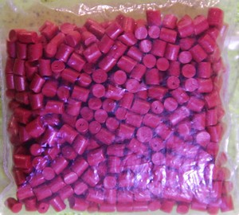
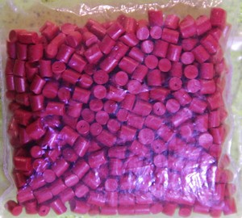

egy űrutazás során számtalan dolgot kell feljuttatni a Marsra, ami nagyon emeli a költségeket. Az Apollo program körülbelül 25.4 mrd dollárba került. Amikor megpróbáltuk megérteni az űrküldetések költségeit, megértettük, hogy 1 kg anyag feljuttatása átlagosan 16 500 dollár, ami kb 4 millió 6 százezer forint. Minden eszközből a redundancia miatt fel kell juttatni minimum kettőt, ez növeli a szállítmány súlyát és költségét.
A szakértők akikkel beszéltünk elmondták nekünk hogy számtalan alkatrészt kell felvinni a Nemzetközi Űrállomásra , és hogy a Rosetta űrküldetés mennyire drága volt, kb 1.4 milliárd euró, és ez korlátozta a hasznos súlyt. Ha ezt nem oldjuk meg valahogy, nem tudunk hatékony Mars küldetésekben gondolkodni.
Az általunk azonosított probléma: hogyan tudunk költség- és tömeghatékonyan 3D nyomtatáshoz filamentet készíteni, hogy felszereléseket gyártsunk helyben a Marson, így csökkentve a rakéta rakomány súlyát. Ez számunkra a #3D2MARS.
Szakértőink: A projekt során nagyon sok segítséget kaptunk szakértőktől, számtalan tudományterületről.
Dr. Vizi Pállal a Wigner Fizikai Kutatóközpont munkatársával a Csodák Palotájában találkoztunk. Sokat tanultunk Dr. Both Elődtől, a Magyar Űrkutatási Iroda igazgatójától, Kovács Viktortól, a 3dmuhely.hu vezetőjétől, Dr. Bodnár Zsolttól, a philament.eu filamentgyártó cég vezetőjétől és Szűcs Lászlótól, a a kecskeméti Planetárium szakelőadójától.
Az áramköri kapcsolások tervezésében Dr. Víg Zoltán, az Óbudai Egyetem Kandó Kálmán Villamosmérnöki Karának adjunktusa segített minket.
A megoldásunk egy olyan gép, ami marsi kőzettel és műanyag olvadékkal filament szálat gyárt, így az ottani 3D nyomtatás költséghatékonyabbá teszi -- egy speciális filament szállal, amit a filament készítő állít elő. A megoldásunk úgy oldja meg a problémát, hogy finom porrá őrölt marsi kőzetet a műanyag olvadékkal keverve elkészíti belőle a filament szálat. A melegítőegység megolvasztja az alapanyagot, amit egy csiga/fúrófej adagol a fejbe, ami kinyomja a filament szálat.

 


Első prototípusainkban olvasztottunk gyertya, majd kempinggázfőző fölött (szabad téren) műanyagot, majd szálat húztunk ki belőle. Ezzel jobban megismertük a műanyagok tulajdonságait. Ezután összevágott PLA-t olvasztottunk, elektromos sütőben kontrollált hőmérsékleten (220 C), és ezt bauxitporral kevert változatban is kipróbáltuk.
A szakértőink javaslatára, hogy jobban megismerjük a különböző anyagokat és hőmérsékleteket - cukorfondatot is olvasztottunk és kevertünk bauxitporral és fecskendőből nyomva próbáltuk szilárd öntvényt létrehozni.


Jelenlegi megoldásunk: egy Arduino alapú megoldást fejlesztünk, hiszen ennek működőképes mikroszámítógépes modelljét mi is meg tudjuk építeni.
Ennek alapja egy Arduino Uno lapka, melyet 5V-ról üzemeltetünk, egy DHT-11 hőmérő / termisztor. Amely a keverőfejnél lévő fűtőegységet kapcsolja ki és be, egyelőre fokozatmentesen (ki-be módban) hiszterézissel, azaz ha 30 Celsius fokot szeretnénk elérni, akkor 28 foknál kapcsoljuk be és 32 C foknál kapcsoljuk ki, így csökkentve a ki-be kapcsolások számát, azonban szabályozva a hőmérsékletet.
A keveréshez egy csigának egy hagyományos fúrófejet és egy fémcső házat használunk.
Későbbiekben az anyag megolvasztásához 210 Celsius fok szükséges (kis mértékben színfüggő), amelyhez Grove - High Temperature Sensor-ra fogunk váltani.
Az általunk használt kevert alapanyagok: általunk gyűjtött és porított bauxit port és PLA alapanyagot használunk. A PLA-t (PoliLactic Acid, magyarul politejsav) egy tejsav alapú, biológiailag lebomló műanyag, amelyet a Marson is elő fognak tudni állítani a gépek és a későbbi telepesek.
Jelenlegi kapcsolási rajzunk:


Az ipari gyártásra úgy kerülhet sor, hogy olyan megközelítéssel és komolysággal teszteljük a gépet ahogy a NASA teszteli az űrrakéta szállítmányait. Az ipari gyártáshoz szükséges tesztelés földi körülményekkel egy kisebb prototípussal, később alacsony Föld körüli pályán lehetséges.

 a 2018-19-es évben, így mi a tanulásra, robot összeállítására, kutatásra és a csapat építésre tudtunk koncentrálni! Köszönjük!
a 2018-19-es évben, így mi a tanulásra, robot összeállítására, kutatásra és a csapat építésre tudtunk koncentrálni! Köszönjük!